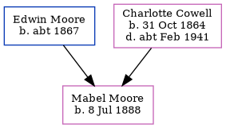

Mabel Emily Charlotte Moore 1888 -
[ Home ] | [ Calendar ] | [ Surnames Index ] | [ Family History ]The 2nd of 3 children of Edwin Moore (a carpenter) and Charlotte Cowell (a domestic servant), Mabel Moore, the second cousin twice-removed on the mother's side of <a href="I1.html">Nigel Horne</a>, was born in Leybourne, Kent, England on Jul 8, 1888<span class="citation">1,2,3,4,5</span> and baptized there at Ss Peter & Paul on Sep 9, 1888.</p><p>Throughout her life, she lived on Standard Road, Bexley, London, England on Apr 5, 1891<span class="citation">6</span>; and at Priory Walk, Tonbridge, Kent, England on Mar 31, 1901<span class="citation">3</span>.
Parents
- Edwin was born c. 1867
- Charlotte Priscilla Ann was born on Oct 31, 1864
Citations
- 1891 England Census Online publication - Provo, UT, USA: The Generations Network, Inc., 2005.Original data - Census Returns of England and Wales, 1891. Kew, Surrey, England: The National Archives of the UK (TNA): Public Record Office (PRO), 1891. Data imaged from The National
- 1901 England Census Online publication - Provo, UT, USA: The Generations Network, Inc., 2005.Original data - Census Returns of England and Wales, 1901. Kew, Surrey, England: The National Archives of the UK (TNA): Public Record Office (PRO), 1901. Data imaged from the National
- 1901 England, Wales & Scotland Census - Findmypast (was age 12 and the daughter of the head of the household)
- England & Wales births 1837-2006 - Findmypast
- Kent Baptisms - Findmypast
- 1891 England, Wales & Scotland Census - Findmypast (was age 2 and the daughter of the head of the household)
Media
England & Wales births 1837-2006 - BMD/B/1888/3/AZ/000380/174
Kent Baptisms - PRS/KENT/BAP/0300232
Kent Baptisms - PRS/BAP/VB-KENT/001499
1891 England, Wales & Scotland Census - GBC/1891/0005243272
1901 England, Wales & Scotland Census - GBC/1901/0006182211
Family Tree
Generated by Ged2Site. Last updated on Jul 20, 2025